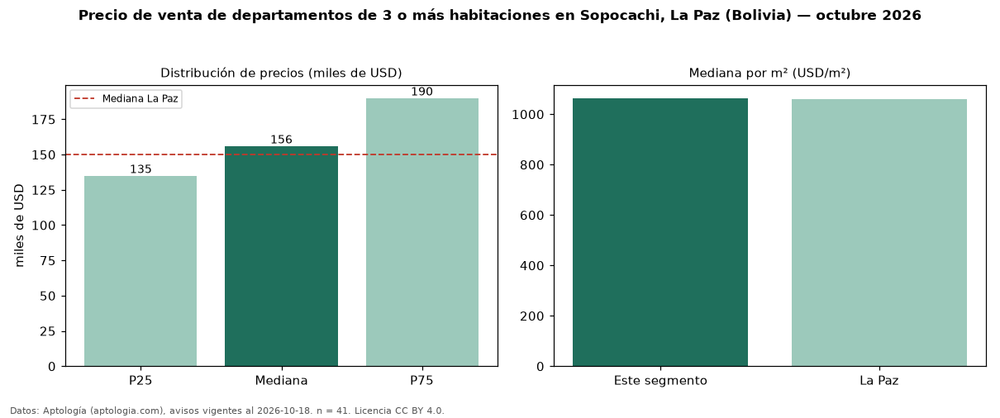

Precio de venta de departamentos de 3 o más habitaciones en Sopocachi, La Paz (Bolivia) — octubre 2026
En Sopocachi, La Paz (Bolivia), la mediana de precio de venta de departamentos de 3 o más habitaciones es USD 156.000, según 41 avisos vigentes. Prácticamente coincide con la mediana de La Paz para departamentos de 3 o más habitaciones (USD 150.000). Por metro cuadrado, la mediana es USD 1.064/m² (n = 39 avisos con área), 0 % por encima de La Paz (USD 1.060/m²). Son 71 % de los 58 avisos de departamentos en venta de la zona, cuya mediana general es USD 142.500 (+9 %). El área mediana anunciada es 152 m². La cuota de mantenimiento o condominio mediana declarada es USD 50,00 al mes (n = 27). La mitad central de los avisos va de USD 135.000 a USD 190.000 (razón 1,4), una dispersión moderada. Datos: Aptología (aptologia.com), CC BY 4.0 — https://www.aptologia.com/bo/venta/la-paz/sopocachi. Archivos: PDF, CSV con las cifras y gráfica PNG.

| Avisos únicos | 41 |
|---|---|
| Percentil 25 | COP 135.000 |
| Mediana | COP 156.000 |
| Percentil 75 | COP 190.000 |
| Mediana por m² | COP 1.063 |
Fuente: avisos vigentes de portales inmobiliarios recopilados por Aptología, deduplicados (mínimo 30 avisos únicos por celda). Precios pedidos, no cerrados. Fecha: 2026-10-18.